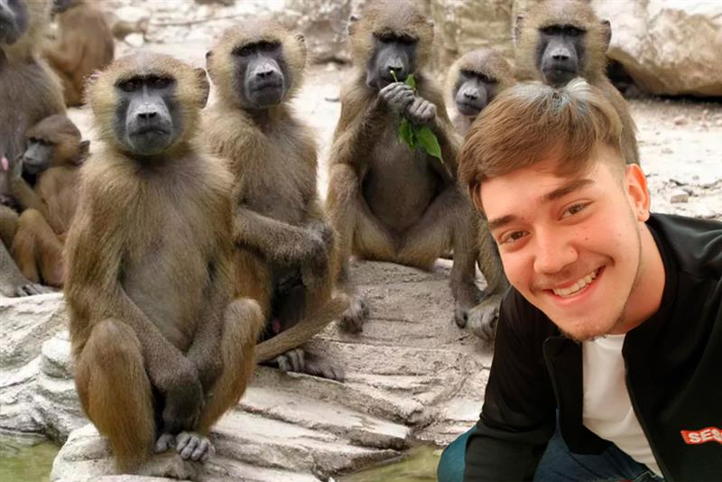
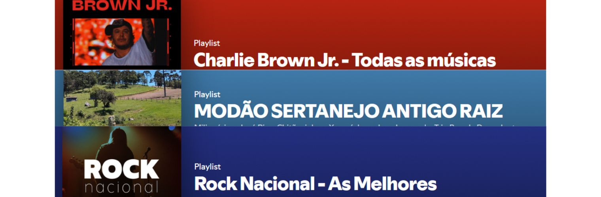
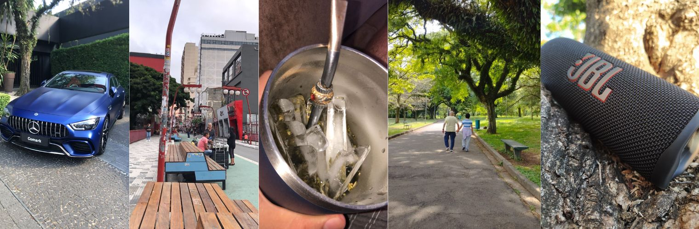
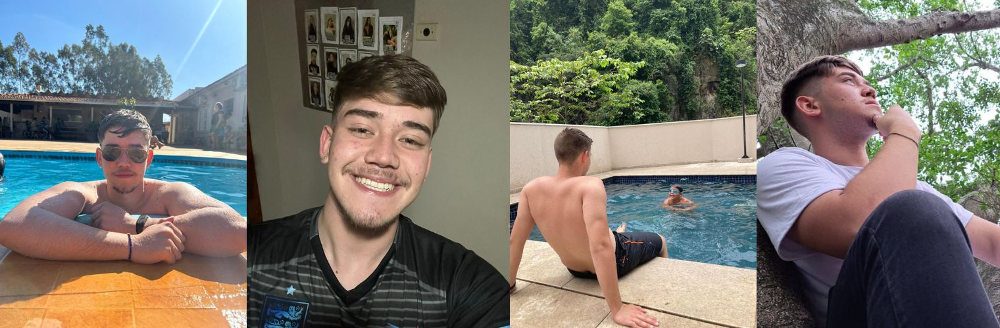
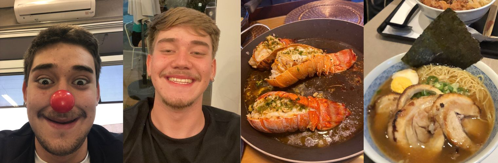
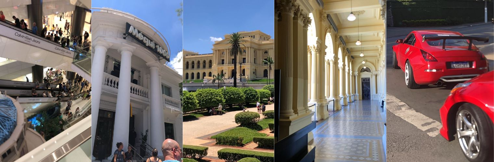
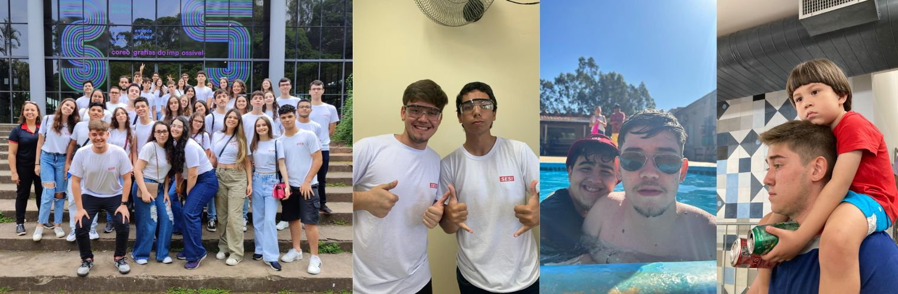
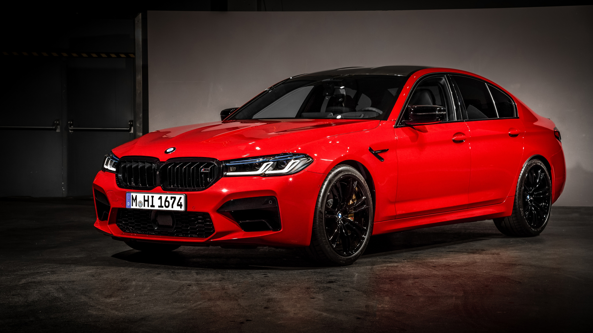

OLÁ, EU SOU O MÁRIO EDUARDO
Um jovem com muitos sonhos e metas!
Planejar cada passo é um costume, e fazer a diferença no dia a dia é o meu objetivo

Savanna Africana (Photoshop)
Um dia, viajarei pelo mundo e irei conhecer novas experiências e culturas por todo lado, por enquanto vai nos meus sonhos mesmo.
ALGUNS DOS MEUS TRABALHOS:







Mário Eduardo um fotógrafo e designer de alto padrão, completando sua formação na escola de BELAS ARTES USP SENAI PAULISTA
Produções baseadas em inovação, misturas de designs virtuais e produções gráficas. Variadas com os pedidos de inúmeros clientes e suas escolhas individuais. Grandes trabalhos prestando serviços ao mundo dos artistas e uma série de albúns fotográficos tanto quanto conteúdos virtuais sobre a natureza, carros, paisagens urbanas e retratos de muitos atores e celebridades da mídia.
(Obs: Na realidade eu vou cursar medicina, e estou em um grande dilema agora, para onde eu vou, para conquistar esse meu maior sonho de graduação e vocação de vida, por enquanto ainda sou um estudante do ensino médio.